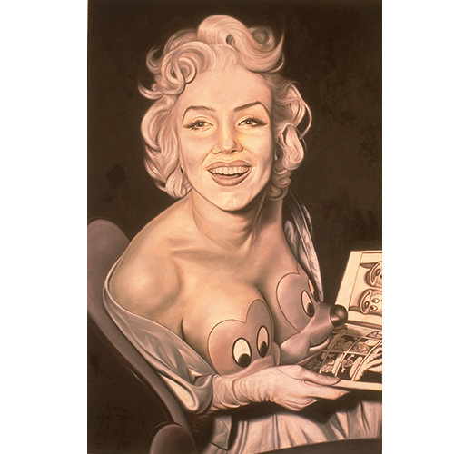

Exhibitions
Agit-Pop America, Gallery Stendhal, New York, New York, US, April 3–30, 1997. Solo exhibition. (1996).
Literature
Ron English, Popaganda: The Art & Subversion of Ron English (San Francisco: Last Gasp, 2001), front inside cover. ISBN 1-887128-60-3.
Notes
This work is based on Marilyn Monroe.